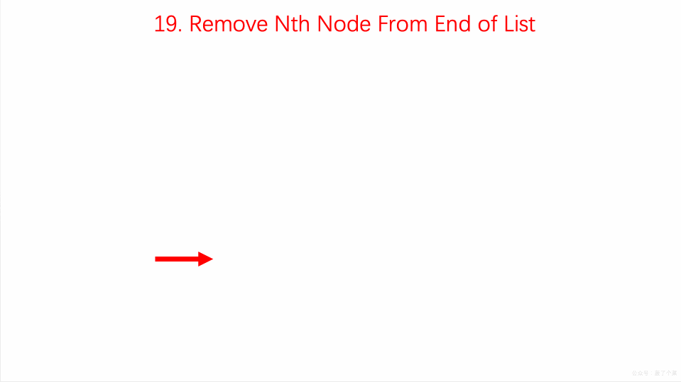

Remove Nth from the end of the list
Given a linked list, remove the n-th node from the end of list and return its head.
Example:
Given linked list: 1->2->3->4->5, and n = 2.
After removing the second node from the end, the linked list becomes 1->2->3->5.
class Solution {
public ListNode removeNthFromEnd(ListNode head, int n) {
ListNode dummy =new ListNode(0);
dummy.next = head;
int length=0;
ListNode first = head;
while(first != null){
length ++;
first=first.next;
}
length -= n;
first = dummy;
while(length>0){
length --;
first=first.next;
}
first.next= first.next.next;
return dummy.next;
}
}
Back